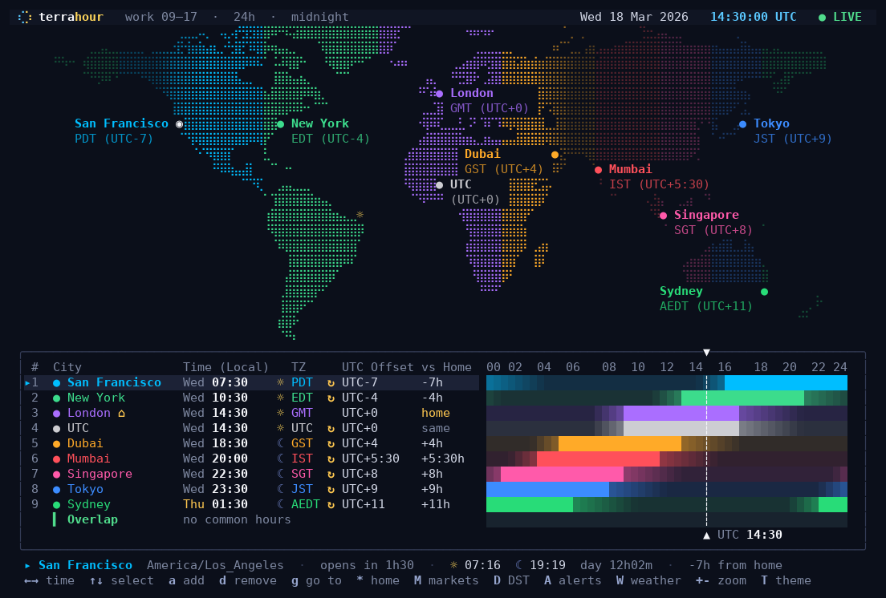
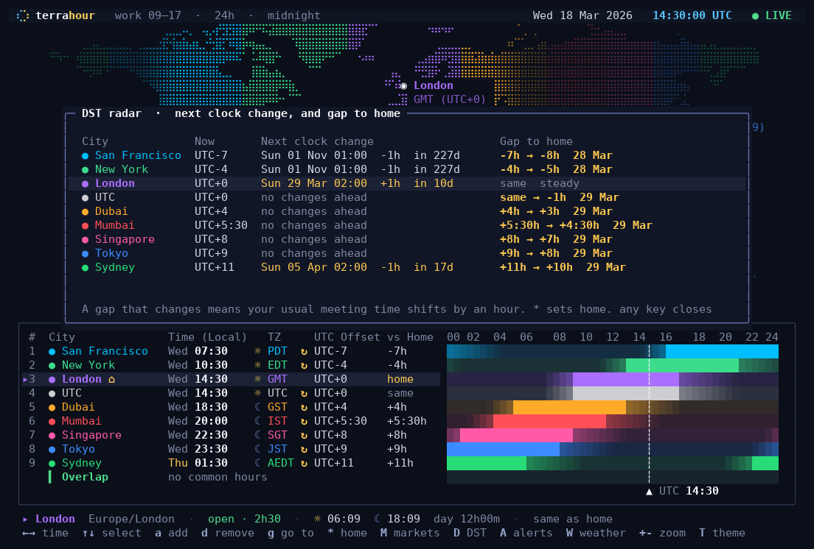
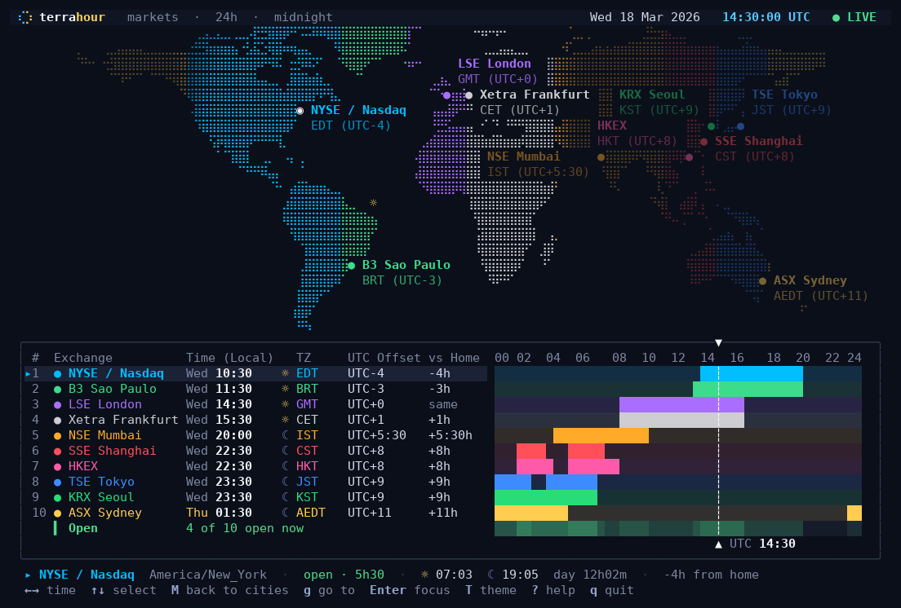

terrahour
A world clock
for the terminal
See daylight, compare time zones, and find a time that works across cities.
pipx install terrahour
terrahour
See daylight, compare time zones, and find a time that works across cities.
pipx install terrahour
Each city gets a bar with its working hours. The row at the bottom shows when everybody is at their desk at the same time.

The DST radar lists the next clock change in every city, and warns you when the gap between you and them is about to shift by an hour.

Swap your cities for the ten biggest exchanges, with their real trading hours and which ones are open right now.

Works on Linux and macOS. On Windows, run it inside WSL.